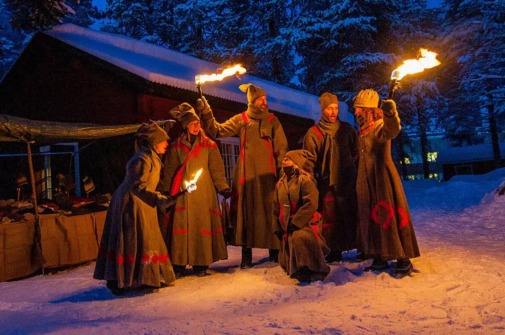
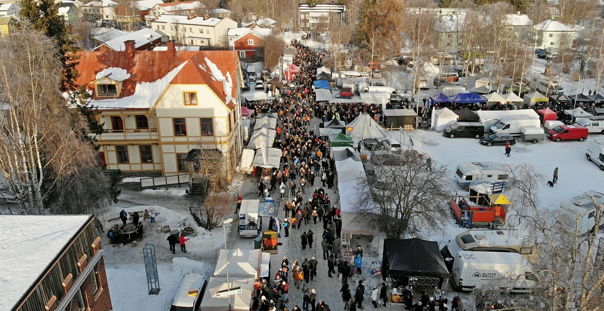
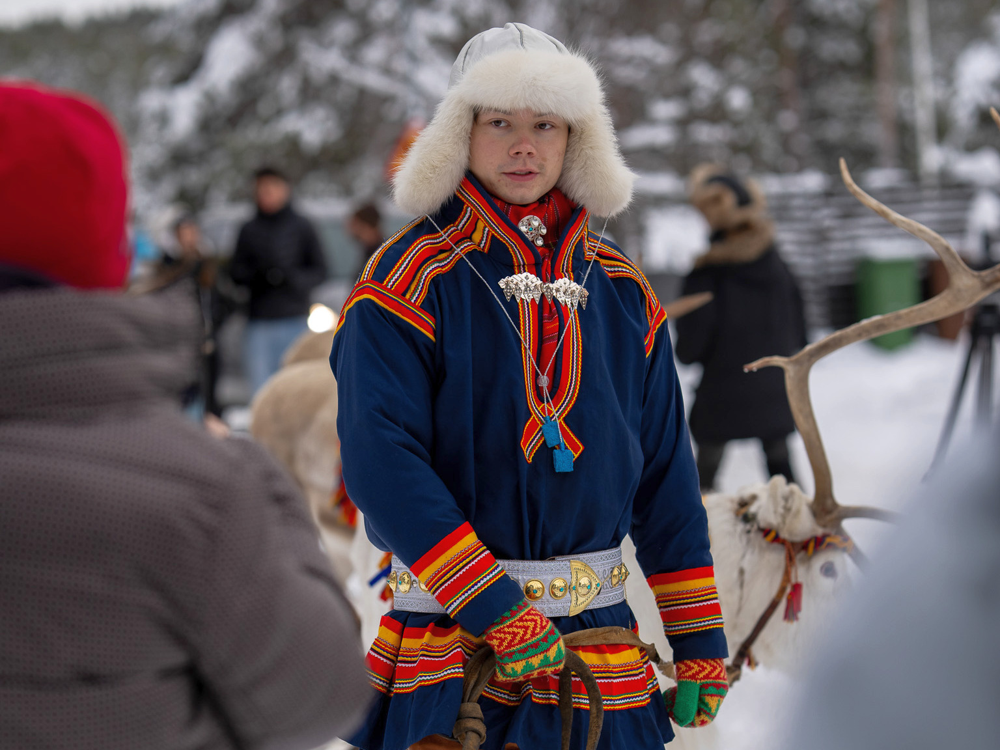

Jokkmokk Winter Market — local & travel information
Optional add-on day (5 Feb). Use this page for practical travel guidance and a short description of the market.
What is the Winter Market?
The Jokkmokk Winter Market is a centuries-old tradition held every February in Jokkmokk, north of the Arctic Circle. Founded in 1605, it brings together Sámi culture, handicrafts, food, music, and winter life in a unique northern setting. Visitors experience traditional duodji crafts, reindeer herding culture, local cuisine, concerts, and seminars—alongside modern cultural events. The market is both a living cultural meeting place and one of Sweden’s most distinctive winter festivals.
See the Official webpage for the winter market for more details.
Travel from Luleå
It takes just over 2 hours by car from Luleå to Jokkmokk. The winter market is very popular, so local transport services are likely crowded. The event takes place in Jokkmokk, everything is within walking distance from the town centre.Link to map
Practical notes
- Temperature: expect -15°C in the day. It is important to bring warm layers and boots.
- Daylight: About 6.5 hours from 9:20 to 15:45.
- Food: Traditional Sámi dishes and local street food are sold at the market
- Money: International credit cards such as Visa/Mastercard are widely accepted. Some smaller vendors may only accept cash (SEK).
- Chances of seeing the Aurora Borealis: 60-80% on clear nights.
Pictures

Winter market atmosphere

Aerial view

Sámi man with reindeer